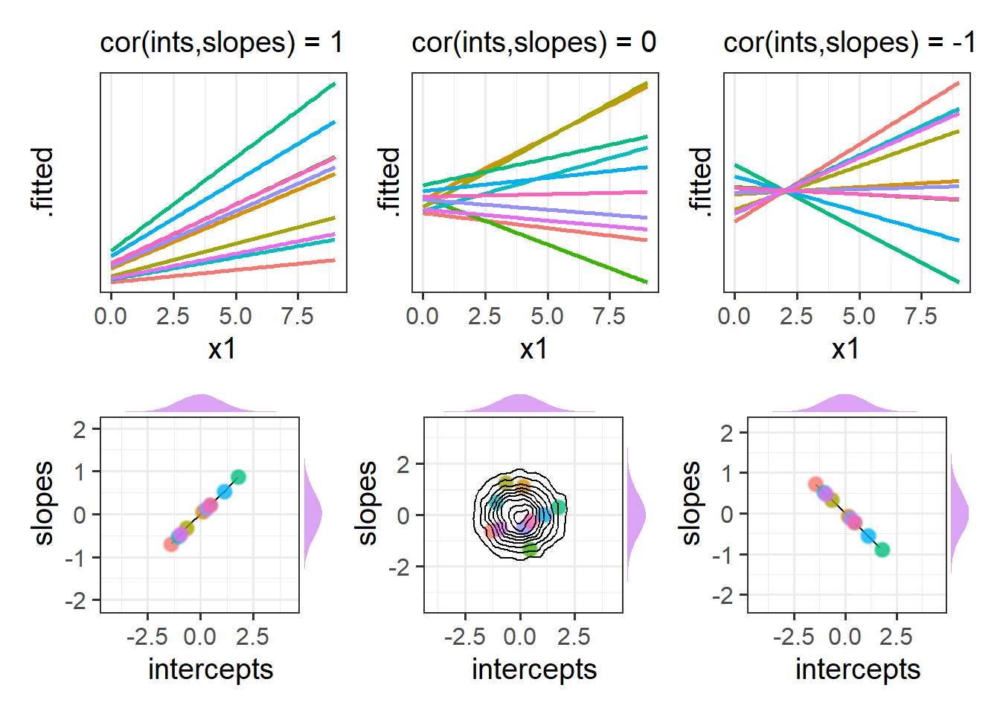

lmer(outcome ~ fixed effects +
(random effects | grouping structure),
data = ...)8: Model Building
This reading:
the ‘maximal’ model
non-convergence and overfitted models
strategies for simplifying models
Model Building Strategies
Random effect structures can get pretty complicated quite quickly. In confirmatory analyses, very often the random effects part is not of specific interest to us, but we wish to estimate random effects in order to more accurately partition up the variance in our outcome variable and provide better estimates of fixed effects (the bit we are interested in).
This process becomes a fine balancing act between choosing a random effect structure that most accurately reflects the underlying process we believe generated the data, and one that we are actually able to fit to our data without too much simplification.
One common approach to fitting multilevel models is to first fit the maximal model (the most complex model that the study design allows, in which we include random effects for everything that makes theoretical sense as varying by our groupings). Because this “maximal model” will often not converge or be too complext to be supported by our data, we then progress to simplifying our random effect structure until we obtain a converging model.
Fully Maximal Model
The “maximal model” is the model with all possible1 random effects included.
Maximal Model
Typically for many research designs, the following steps will keep you mostly on track to finding the maximal model.
Start by thinking of the model structure in terms of these components:
Specify the
outcome ~ fixed effectsbit first.- The outcome variable should be clear: it is the variable we are wishing to explain/predict.
- The fixed effects are the things we want to use to explain/predict variation in the outcome variable. These will often be the things that are of specific inferential interest along with potential confounders and other covariates. Just like the simple linear model.
If there is a grouping structure to your data, and those groups (preferably n>7 or 8) are perceived as a random sample of a wider population (the specific groups aren’t interesting to you), then consider including random intercepts (and possibly random slopes of predictors) for those groups
(1 + ... | grouping).If there are multiple different grouping structures, is one nested within another? If so, we can specify this as
(1 | higher_grouping ) + (1 | lower_grouping:higher_grouping).
If the grouping structures are not nested, we can specify them as crossed:(1 | grouping1) + (1 | grouping2).If any of the predictors in the fixed effects vary within the groups, it may be possible to also include them as random effects. For predictors that instead vary between groups, it rarely makes sense to include these as by-group random effects. For example, if we had a model with
lmer(score ~ genetic_status + (1 + genetic_status | patient))then we would be trying to model a process where “the effect of genetic_status on scores is different for each patient”. But if you consider an individual patient, their genetic status never changes. For patient \(i\), what is “the effect of genetic status on score”? It’s undefined. This is because genetic status only varies between patients.- as a general rule, don’t specify random effects that are not also specified as fixed effects (an exception could be specifically for model comparison, to isolate the contribution of the fixed effect).
- Sometimes, things can vary within one grouping, but not within another. E.g., for a design in which patients are nested within hospitals
(1 | hospital) + (1 | patient:hospital), genetic_status varies between patients, but within hospitals. Therefore we could theoretically fit a random effect of(1 + genetic_status | hospital), but not one for(1 + genetic_status | patient:hospital).
- as a general rule, don’t specify random effects that are not also specified as fixed effects (an exception could be specifically for model comparison, to isolate the contribution of the fixed effect).
Non-Convergence
Oftentimes, models with more complex random effect structures will not converge because there are so many parameters, and not enough variability in the data, meaning that there are more places for the model estimation to go wrong. Remember that we fit these models with maximum likelihood estimation (MLE), a process that involves taking a guess at the model parameters that result in the greatest probability of the observed data, and step-by-step improving those guesses until we think we’re at the most likely set of parameters - until the model ‘converges’. Sometimes, however, MLE can sometimes get stuck, resulting in ‘non-convergence’.
There are many possible reasons for non-convergence, and it does not necessarily mean the fit is incorrect. However it is is cause for concern, and should be addressed before using the model, else you may end up reporting inferences which do not hold. There are lots of different things which we can try which might help our model to converge. A select few are detailed below:
Things we can try
most likely solutions:
double-check the model specification and the data
Consider simplifying your model (more on this below)
Center and scale continuous predictor variables (e.g. with
scale)Change the optimization method (for example, here we change it to
bobyqa):
lmer(..., control = lmerControl(optimizer="bobyqa"))
glmer(..., control = glmerControl(optimizer="bobyqa"))Use
allFit()to try the fit with all available optimizers. This will of course be slow, but is considered ‘the gold standard’; “if all optimizers converge to values that are practically equivalent, then we would consider the convergence warnings to be false positives.”
allopts <- allFit(model)
summary(allopts)
- Fine-tune an optimizer. Using the optCtrl argument to [g]lmerControl (see
?convergencefor details), we can have a lot of control over the optimizer. Recall that the optimizer is a method of iteratively assessing a set of parameters to maximise the probability of seeing the observed data2. We can change things such as the number of steps the algorithm keeps trying for, and the thresholds at which the algorithm stops (Figure 1).

Singular Fits
As well as convergence warnings, you may have noticed that some of our models over the last few weeks have been giving a warning message:
boundary (singular) fit: see ?isSingular
Up to now, we’ve been largely ignoring these messages, but we should really have been addressing them in some way. ‘Singular fit’ warnings indicate that our model is likely to be ‘overfitted’ - that is, the random effects structure which we have specified is too complex to be supported by the data.
For simple random effect structures (i.e. a random intercept + a random slope), we can often see this issue reflected in the variance components of the random effect, when variances get estimated at (or very close to) zero, and/or when correlations get estimated at (or very close to) 1 or -1 (Figure 2). With more complex structures it is not always so easily visible, but we can do a double check for this issue using the handy isSingular(model) function - if it returns TRUE then it indicates our model might be overfitted.
What do we do in these cases? Simplify, simplify, simplify!
Scales can matter!
The scale of our predictors can sometimes play a part here. If we were fitting a model of shoe_size ~ height, then the estimated coefficient is going to depend on how we measure height. If we measure it in millimeters, then we’ll probably have a very small coefficient (people’s shoe size will only change by a tiny amount for every 1mm height they gain), but if we measure height in kilometers, then we’ll have a very big coefficient (“grow an extra kilometer in height, and your shoe size will increase 10000 sizes”!!).
In the multilevel model, we’re estimating the variances in these relationships across a set of clusters. If the coefficient is in millimeters, then the variance is in millimeters too, and so the number will be quite small. If it’s in kilometers, the coefficient is in units 100,000 times bigger, and so is the variance.
Scaling predictors doesn’t change the relationship being studied, but it does change the numeric values we are asking our relationship to be presented in. As the estimation of multilevel models can get into difficulty when variances are too close to zero, you may occasionally receive messages such as those below.
Pay attention to them, and check your variables. If some are on very different scales, then consider trying to rescale them to something that is still meaningful for you.
Warning messages:
1: Some predictor variables are on very different scales:
consider rescaling
Warning messages:
1: In checkConv(attr(opt, “derivs”), opt$par, ctrl = control$checkConv, :
Model is nearly unidentifiable: large eigenvalue ratio
- Rescale variables?
Simplifying Random Effect Structures
There is no right way to simplify random effect structures - it’s about what kind of simplifications we are willing to make (which is a subjective decision). Key to the process of simplifying your random effects is to think about how the data are generated, and to keep in mind your research question. Asking yourself things such as “do we have good reason to assume subjects might vary over time, or to assume that they will have different starting points (i.e., different intercepts)?” can help you in reasoning through the problem.
Examining the variance components of a non-converging model can also help to point towards problematic terms. Be on the look out for random effects with little variance, or with near perfect correlation. When variance estimates are very low for a specific random effect term, this indicates that the model is not estimating this parameter to differ much between the levels of your grouping variable. It might, given the study design, be perfectly acceptable to remove this or simply include it as a fixed effect.
Below are various considerations to keep in mind, along with some practical strategies
Reasons to Include Random Slopes
random slopes of predictors of interest
If we want to make inferences about a fixed effect x that is measured within groups, then failing to include a corresponding random slope of x will increase the chance of making a type I error (we’ll be more likely to conclude there is an effect even if in reality there is no effect). Intuitively - if we let each group be different, then our estimate of ‘the average group’ becomes less certain.
random slopes of covariates
If a fixed effect c that is measured within groups is not of inferential interest but is instead included in the model as a covariate, then it is less crucial to include a corresponding random slope of c, because the fixed effect is sufficient. However, including random slopes of c can improve the precision of the effects that we are interested in, depending on the level of multicollinearity of those variables with c.
‘More Complex’ Random Effect Terms
Complex terms like interactions (e.g. (1 + x1 * x2 | group) are often causes of non-convergence or overfitting as they require more data to estimate group-level variability, and the interaction terms is often highly correlated with the individual effects. Prior to removing one of the terms completely, this can be simplified to (1 + x1 + x2 | group).
Random Effect Correlations
The ‘random effects’ part of multilevel models includes not just variances of group-level effects, but also the correlations between different terms. The part of the output of the VarCorr() function that comes under “Corr” is a correlation matrix (i.e., a square symmetric matrix with the same columns as rows, and 1s on the diagonal, see Figure 3).
So what exactly do these correlations represent? Recall that the ‘random effects’ parts of our models is the estimation of how groups deviate around the fixed effects.
In estimating a random effect structure with intercepts and slopes, we are estimating these random effects as jointly distibuted as a ‘multivariate normal distribution’.
\[ \begin{bmatrix} \zeta_{0i} \\ \zeta_{1i} \end{bmatrix} \sim N \left( \begin{bmatrix} 0 \\ 0 \end{bmatrix}, \begin{bmatrix} \sigma_0 & \rho_{01} \\ \rho_{01} & \sigma_1 \end{bmatrix} \right) \]
In essence, this means we are estimating means, variances (or standard deviations), and covariances (or correlations). The means of random effects are by definition 0, and we have already seen plenty about the variances thus far when talking about random effects. The correlations are the estimated relationship between different terms - e.g., do groups with higher intercepts tend to have higher/lower slopes?
It often helps to think about what these would be like when the correlations are perfect (i.e. 1 or -1). In Figure 4, we can see that in the Left hand panel, the higher a group starts, the more upwards the slope (and vice versa). In the Right hand panel the reverse is true - groups with higher intercepts have more downwards slopes. In the middle panel, where the correlation is 0, there’s no systematic pattern between where the lines start and their angle across x.
We can see a visualisation of the distributions below each plot, with each point representing a group in the model. For perfect correlations, plots of group-intercepts against group-slopes will fall along a perfectly straight line. When there is no correlation these are scattered randomly, and as the estimated correlation gets stronger, the circular density in the bottom-middle plot of Figure 4 becomes more elliptical.

We can choose (if we so wish) to not estimate the correlations between random effects. This choice equates to fixing this correlation in our model be 0. We do this by using two vertical lines || instead of one. By removing correlations between random effects we are reducing the number of parameters than are being estimated - our model becomes simpler! However, it is worth noting that this decision should be thought about carefully - does it make sense to constrain a given correlation to be zero?
| lme4 syntax | description | equation |
|---|---|---|
... + (1 | g) |
random intercepts only | \[\zeta_{0i} \sim N (0, \sigma_0)\] |
... + (0 + x | g) |
random slopes only | \[\zeta_{1i} \sim N (0, \sigma_1)\] |
... + (1 + x || g) |
random intercepts and slopes, zero covariance | \[\begin{bmatrix} \zeta_{0i}\\ \zeta_{1i} \end{bmatrix} \sim N \left( \begin{bmatrix} 0 \\ 0 \end{bmatrix}, \begin{bmatrix} \sigma_0 & 0 \\ 0 & \sigma_1 \end{bmatrix} \right)\] |
... + (1 + x | g) |
random intercepts and slopes | \[\begin{bmatrix} \zeta_{0i}\\ \zeta_{1i} \end{bmatrix} \sim N \left( \begin{bmatrix} 0 \\ 0 \end{bmatrix}, \begin{bmatrix} \sigma_0 & \rho_{01} \\ \rho_{01} & \sigma_1 \end{bmatrix} \right)\] |
Categorical Random Effects on the RHS
When we have a categorical random effect (i.e. where the x in (1 + x | g) is a categorical variable), then model estimation can often get tricky, because “the effect of x” for a categorical variable with \(k\) levels is identified via \(k-1\) parameters, meaning we have a lot of variances and covariances to estimate when we include x|g.
When x is numeric:
Groups Name Std.Dev. Corr
g (Intercept) ...
x ... ...
Residual ... When x is categorical with \(k\) levels:
Groups Name Std.Dev. Corr
g (Intercept) ...
xlevel2 ... ...
xlevel3 ... ... ...
... ... ... ... ...
xlevelk ... ... ... ... ...
Residual ... One neat trick is to consider moving the categorical predictor the right hand side, nesting it within the groups:
(1 + x | g)
becomes
(1 | g) + (1 | g:x)
Remember that the symbol : in g:x is used to refer to the combination of g and x, and is just the same as how we specify nested random effects.
g x g:x
1 p1 a p1.a
2 p1 a p1.a
3 p1 b p1.b
4 ... ... ...
5 p2 a p2.a
6 p2 b p2.b
7 ... ... ...It’s a bit weird to think about it, but these two formulations of the random effects can kind of represent the same idea:
- A:
(1 + x | g): each group ofgcan have a different intercept and a different effect ofx
- B:
(1 | g) + (1 | g:x): each group ofgcan have a different intercept, and each level ofxwithin eachgcan have a different intercept.
Both of these allow the outcome y to be different across x, and these differences be different for each g (i.e. both of them result in y being different for each g:x value). Formulation A above does this explicitly by estimating the group level variance of the y~x effect (“the effect of x on y is different for each g”). The second formulation B estimates the variance of y between groups g, and also the variance of y between ‘levels of x within groups g’. So we’re saying that “y is different for each g, and y is different for each x-within-g.
So both of these achieve more or less the same thing, but in the second formulation by capturing this as intercept variation between levels of g:x, we don’t have to worry about lots of covariances:
(1 + x | g)
Groups Name Std.Dev. Corr
g (Intercept) ...
xlevel2 ... ...
xlevel3 ... ... ...
... ... ... ... ...
xlevelk ... ... ... ... ...
Residual ... (1 | g) + (1 | g:x)
Groups Name Std.Dev.
g (Intercept) ...
g.x (Intercept) ...
Residual ...
optional: attempted visual explanation
I typically think of formulation A as a panel of y~x plots for each group, where the slopes can be different for each panel.

For the second formulation B, I think of this in terms of nested random intercepts - there is a distribution of group averages (the grey distribution below), and within groups there is a distribution of x-level averages (the coloured distributions below).

TODO
optional: PCA on the random effect variance-covariance matrix
We’re probably yet to hear about “PCA” (principal component analysis), but the very high-level view is that it aims to simplify a set of variables by identifying the most important patterns or “components” (allowing us drop less important ways in which people vary). For instance, if a survey asked 10 questions, 5 of which were about physical health, and 5 which were about mental health, then the 5 physical health questions would likely be correlated with one another, and the 5 mental health questions would likely be correlated with one another. PCA might tell us something like “given this set of correlations, 2 ‘dimensions’ can explain most of the variability that we see”.
The benefit for us in this context is that we have a correlation matrix in our random effects from a maximal model, and we can use PCA to ask “how many ‘dimensions’ capture most of this variation?”
In the lme4 package the rePCA() function can do this when we give it an lmer() model.
TODO example
- fit maximal
- summary(rePCA(model))
- fit ZCP
optional: data-driven approaches
library(buildmer) buildmer(formula,buildmerControl=buildmerControl(direction=c(“order”,“backward”), crit=“LRT”))
Footnotes
this doesn’t mean simply including every predictor in the fixed effects also in the random effects part. ‘possible’ refers to ‘possible given the study design’↩︎
instead of maximising the likelihood, more often (for practical reasons) our algorithms try to minimise \(-2 \times\) the log-likelihood↩︎